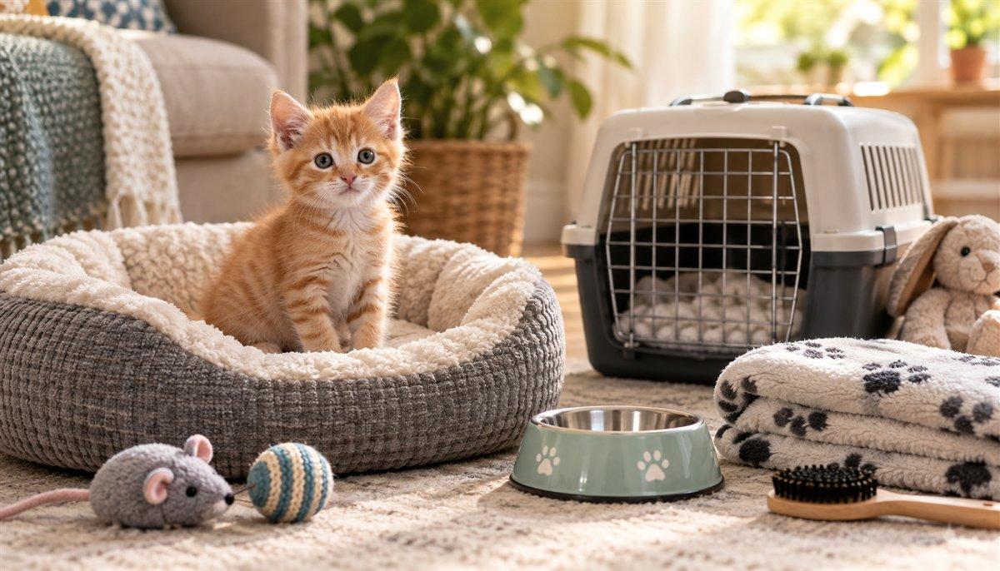

The Complete New Kitten Checklist

A kitten weighs about as much as a can of soup and will still find every gap behind your appliances by Tuesday. The trick to a calm first week isn't heroics — it's setting the stage before those tiny paws arrive. Drawing on guidance from the ASPCA, the AVMA and practicing vets, here's the full checklist: what to buy, how to kitten-proof, the litter box setup that actually works, what the first day should look like, and the food rules that keep a very small cat out of very big trouble.
Before pickup: the shopping list
🛒 The essentials
- Litter box + litter — a low-sided box a small kitten can climb into, plus unscented clumping litter. Many kittens reject perfumed litter; their nose is doing enough work already.
- Kitten food — the exact brand and formula the shelter or breeder has been feeding. Buy a small bag even if you plan to switch later. Kittens need kitten food, not adult cat food — the calorie and nutrient needs are different.
- Food and water bowls — stainless steel or ceramic, and shallow. Wide, low bowls also spare sensitive whiskers.
- A carrier — hard-sided, opening from the top and front. Leave it out with a blanket inside from day one so it becomes furniture, not a trap that appears before vet visits.
- Scratching post — at least one sturdy vertical post, in place before the kitten arrives. Scratching is a need, not a habit; your only vote is on where.
- Toys — a wand toy for interactive play, plus a few small solo toys. Skip string, ribbon and yarn left unattended — swallowed string is a classic kitten surgery.
- A cozy bed — though fair warning: many kittens will ignore it in favor of the cardboard box it came in.
- Enzymatic cleaner — accidents happen while litter habits settle, and regular cleaners hide the smell from you but not from the kitten.
📋 The paperwork & planning
- Vet appointment — booked for the first week, even if the kitten looks perfectly healthy. Kittens need a vaccine series, deworming, and a check for common shelter bugs.
- Vaccine and deworming records — get everything the shelter or breeder has, in writing.
- Microchip registration — if chipped, transfer the registration to your name immediately. Indoor cats slip out doors too.
- A name — cats learn their names better than they let on. (Stuck? Our name generator is dangerously fun.)
- A budget check — food, litter, vet visits and insurance add up quietly. Run the numbers in two minutes with our pet cost calculator.
Litter box setup that actually works
Most "bad kitten" litter problems are really setup problems. The widely used rule from feline vets and the American Association of Feline Practitioners is one box per cat, plus one extra — so a single kitten still benefits from two boxes once the run of the house opens up. Place boxes in quiet, easy-to-reach spots, never next to the food bowls and never beside a loud washer or furnace. Keep to one litter type (unscented, clumping is the usual starting point), scoop at least once a day, and fully wash the box on a regular schedule with mild soap — strong chemical or citrus cleaners can put a kitten off. If your kitten has accidents, the usual suspects are a box that's too tall or too far away, a sudden litter change, a dirty box, or stress — and a kitten that suddenly strains, cries in the box or produces little urine needs a vet the same day.
Kitten-proofing: think in three dimensions
Puppy-proofing happens at nose height. Kitten-proofing happens everywhere, because a kitten treats your home as a climbing gym. Vets and the ASPCA flag the same repeat offenders: dangling cords from blinds and chargers (a strangulation and chewing hazard), washing machines and dryers (always check before closing — kittens nap in warm laundry), recliners and sofa beds (look before you fold), toilet lids (keep them down; a kitten can fall in and not climb out), rubber bands, hair ties and string (irresistible, swallowable, dangerous), and any gap behind appliances a fist can fit through — because a kitten fits too.
Room-by-room kitten-proofing
| Room | Check this | Why it matters |
|---|---|---|
| Kitchen | Lidded trash can, closed cabinets, no food left on counters, stove knobs covered or off | Onions, garlic, chocolate and bones are the top kitchen hazards (onion, cooked bones) |
| Bathroom | Toilet lid down, medications in a closed cabinet, small items (hair ties, floss) in lidded bins | Human pills are a leading cause of pet poisonings (ibuprofen, acetaminophen); hair ties are easy to swallow |
| Living room | Cords bundled or covered, recliner footrests checked before use, houseplants vetted | Chewed cords and crushed kittens in recliner mechanisms are classic accidents (toxic plants list) |
| Bedroom | Closet and drawers closed, sewing supplies and jewelry put away, under-bed gaps checked | String, thread and rubber bands can cause intestinal blockages |
| Laundry room | Check washer and dryer before every cycle, detergent pods out of reach | Kittens nap in warm laundry; detergent is a poison risk |
| Windows & doors | Secure screens, block blind cords, use a door-watch routine | Kittens bolt for open doors and can fall through weak screens |
The first day: one room, not the whole house
The kindest thing you can do for a new kitten is shrink the world. Set up one quiet "home base" room — a bedroom or bathroom works — with the litter box, food and water (kept well apart from the box; cats dislike dining next to the bathroom), a hiding spot, and a few toys. Open the carrier in that room and let the kitten come out on its own schedule, even if that takes an hour. Sit on the floor, talk softly, resist the urge to scoop. Most kittens explore, use the box, eat a little, and fall asleep mid-play — that's a perfect first day. Give it two or three days in home base before opening up the rest of the house, one room at a time.
The first week: build the routine
🗓️ Week-one priorities
- Vet visit — a full exam, a fecal test, the vaccine schedule (usually starting with FVRCP), and a chat about spay/neuter timing. Bring the shelter's records and a stool sample if you can.
- Litter box wins — keep it scooped daily and never move it suddenly. If accidents happen, don't punish; put the kitten in the box after meals and naps, and check that the box isn't too tall, too far away, or too scented.
- Play with purpose — two or three short wand-toy sessions a day burn kitten energy and teach the golden rule: hands are not toys. Redirect every hand-pounce to a toy now and you won't own a cat that ambushes ankles at two.
- Handling practice — touch paws, ears and mouth gently every day and pair it with treats. Future nail trims and vet visits get dramatically easier.
- Scratching post praise — reward every use. A post next to the sofa beats a post hidden in the basement.
- Alone-time practice — short departures from day two or three. Kittens bond harder than their reputation suggests.
What to expect by age
| Age | Typical stage | What you do |
|---|---|---|
| 8–12 weeks | Most common age to come home; learning litter habits, very curious, tires quickly | Home base room, 3–4 small meals, start gentle handling, first vet visit |
| 3–4 months | Peak climbing and pouncing; vaccine boosters continue; adult teeth start coming in | Daily wand play, safe chew toys, finish the vaccine series on your vet's schedule |
| 4–6 months | Teenage phase begins; testing boundaries; spay/neuter conversation | Keep routines steady, book spay/neuter timing with your vet |
| 6–12 months | Closer to adult size and energy; settling into personality | Ask your vet about transitioning to adult food, keep play sessions going |
Every kitten develops at its own pace, so treat these as rough landmarks rather than deadlines, and lean on your vet for timing specific to your cat.
The first vet visit: what to bring and ask
Book it for the first week, even if your kitten came with paperwork. Bring any shelter or breeder records, a fresh stool sample if you can, and a short list of questions. Your vet will typically weigh the kitten, check eyes, ears, teeth, skin and heart, test a fecal sample for parasites, discuss testing for feline leukemia (FeLV) and FIV, and start or continue the core vaccine series (FVRCP, with rabies given at the age set by your local rules). Good questions to ask: What should my kitten weigh at each visit? Which food and how much per day? When do boosters and spay/neuter happen? What flea and parasite prevention is right for an indoor kitten? What does the microchip registration need? Ask about a vaccine schedule you can follow, and use our calorie calculator as a starting point for portions — your vet's number always wins.
Feeding a new kitten: the three rules
Rule one: don't switch food abruptly. Keep the shelter's or breeder's food for at least the first week, then transition over 7–10 days by mixing in increasing amounts of the new food. A sudden switch plus rehoming stress is the top cause of new-kitten diarrhea — and diarrhea is riskier in a two-pound animal. Rule two: kittens eat little and often — typically three to four small meals a day until around six months, always a food labeled for kittens or "all life stages." Rule three: treats count, and cats are true carnivores. Keep treats under about 10% of daily calories and stick to genuinely safe ones — a shred of plain cooked chicken beats anything from your plate, and even tuna should be an occasional treat, not a diet. Not sure about a food? Check it in seconds before it leaves your hand.
The first month at a glance
| When | Focus |
|---|---|
| Days 1–3 | Home base room only; let the kitten set the pace; quiet voices; confirm eating, drinking, and litter use |
| Days 4–7 | Vet visit; open one more room; short play sessions; start paw/ear/mouth handling with treats |
| Weeks 2–3 | Introduce other pets slowly; practice the carrier; start slow food transition if your vet recommends it |
| Week 4 | Review routines; schedule boosters; shop for outgrown items; re-check kitten-proofing as skills improve |
When to call the vet right away
🎃 Fall & Halloween: kitten edition
If your kitten arrives this season, a few extras apply. Candy is the obvious one — chocolate and anything sweetened with xylitol should live where a climber can't reach, and wrappers are an obstruction risk. Real candles and jack-o'-lanterns are tempting to swat, so use battery lights, and keep decorative string and fake cobwebs out of reach. A steady stream of trick-or-treaters is stressful for a new kitten and a door-dash risk: keep the kitten in its home base room with the door closed during the evening. Our Halloween pet safety guide has the full checklist. And note that daylight saving time ends on Sunday, November 1, 2026 — kittens run on stomach clocks, so shift meals and play by 10–15 minutes a day to ease the change.
Frequently asked questions
How long should I keep my kitten in one room?
Two or three days is typical — until the kitten is eating well, using the litter box reliably, and greeting you at the door. Confident kittens graduate faster; shy ones may want a week. Expand access one room at a time rather than all at once.
When can my kitten meet my other pets?
After the vet visit, and slowly: swap bedding for scent first, then feed on opposite sides of a door, then short supervised visits. Rushing introductions is the most common cause of long-term pet friction — our guide to dogs and cats getting along walks through the full process.
Should my kitten be indoor-only?
Most vets and the ASPCA recommend keeping cats indoors, where average lifespans are dramatically longer. If you want outdoor time, a harness (trained early — kittens accept them far more easily than adult cats) or a secure "catio" gives the fresh air without the traffic, predators and poisons.
When should my kitten be spayed or neutered?
Many vets recommend around five to six months, before the first heat, though shelters often do it earlier. Your vet will time it based on weight and health — ask at that first appointment. (For information only — not veterinary advice.)
How many litter boxes does one kitten need?
The common guideline is one box per cat plus one extra. For a single kitten, start with one low-sided box in the home base room and add a second as the kitten gets access to more of the house, so a box is never far away.
How often should a kitten eat?
Most kittens do best with three to four small meals a day until around six months, then move to two meals. Use a food labeled for kittens or all life stages and follow the label as a starting point; your vet will adjust portions based on your kitten's weight and body condition.
Is it okay to give my kitten milk?
Not as a treat. Once weaned, many kittens can't digest cow's milk well, and it can cause diarrhea. Fresh water is the right drink; if a kitten is orphaned or very young, ask your vet about kitten milk replacer instead.
What if my kitten hides and won't come out?
Hiding is a normal stress response in the first days. Leave food, water and a litter box nearby, keep the room quiet, sit near the hiding spot without forcing contact, and let the kitten come to you. If a kitten refuses to eat or drink for a day, or seems unwell, call your vet.
This guide is for information only — not veterinary advice. Sources consulted: ASPCA, American Association of Feline Practitioners (AAFP), AVMA, Merck Veterinary Manual and Pet Poison Helpline. Always consult your vet about your kitten's specific health, feeding and vaccination plan.